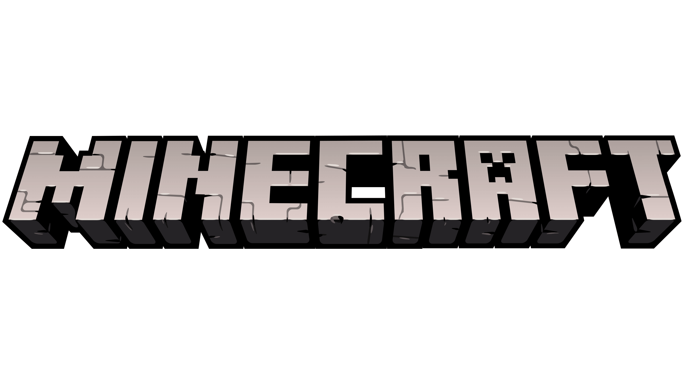

Tier 1XP 0/10נשמר

לחץ על פריט כדי להעביר בין המלאי לתיבה.
חקור עולם 2D, כרה משאבים, בנה, צור חפצים, השתמש בתנור ושמור כמה עולמות נפרדים.
WASD או חצים. רווח/חץ למעלה לקפיצה. המצלמה עוקבת אחרי הדמות. בטלפון השתמש בכפתורי המגע.
בחר כלי, החזק עכבר על בלוק מתאים לכרייה. בחר בלוק מהמלאי או Hotbar והקלק על שמים כדי לבנות. טווח הפעולה מוגבל סביב הדמות.
Shovel לאדמה וחול, Pickaxe לאבן ומתכות, Axe לעץ, Vacuum לעננים/מים. משאבים קשים דורשים Tier גבוה.
C פותח Crafting. F פותח Furnace. הנח Chest בעולם ולחץ עליו כדי לפתוח אחסון נפרד. Furnace צורך פחם.
אפשר ליצור עד עשרות עולמות, לשכפל, למחוק, לייצא JSON ולייבא מחדש. קיימים Normal, Flat, Cave ו-Sky World ובשלושה גדלים.
Autosave שומר שינויים בדפדפן. כל עולם נשמר בנפרד. חזרה לתפריט שומרת מיד.
הישגים נפתחים לפי כרייה, בנייה, Crafting, התכה וגילוי יהלום.
האתר מותקן כ-PWA ו-Service Worker שומר את קבצי הליבה לשימוש אופליין לאחר ביקור ראשון.
1–9 Hotbar · E מלאי · C Crafting · F Furnace · H Help · P Pause · S Save · Ctrl+Z/Y Undo/Redo.